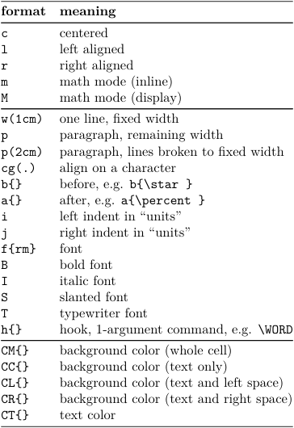
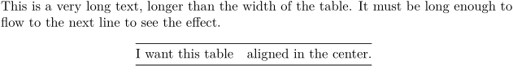
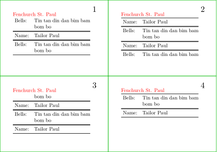
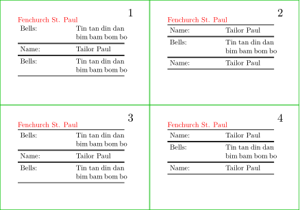
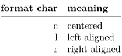
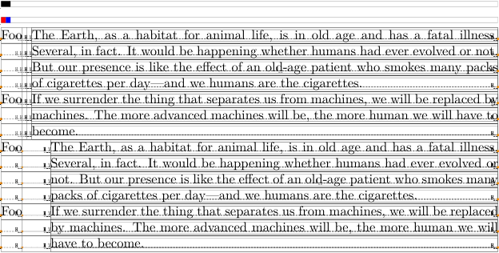
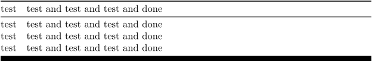
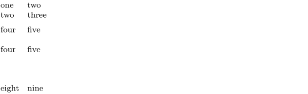
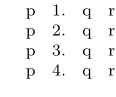
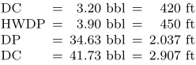

Contents
Summary
\starttabulate is a versatile table environment. It supports paragraphs in cells, vertical rules (for those typographically less demanding jobs …), and colorization of those rules, the background of fields as well as the text itself.
Key commands are \starttabulate, \setuptabulate and \definetabulate.
Warning: When you want to use tables with macros use the tables TABLE, based on \bTABLE and \eTABLE. (See Tables/Natural_tables_with_TABLE.) The commands \starttabulate and \stoptabulate do not work correctly with macros.
Basic commands
The control sequence \starttabulate[#1] takes a layout string as optional argument. As is common with tables in TeX-based typesetting, this string (in its basic variant) consists primarily of the bar character (“|”) as delimiter for columns, and of the letters c, l, as well as r, denoting the alignment within cells of this row.
For instance consider a two-column table: if text in the first column should be right aligned (real flushright) and the second column left aligned, the corresponding format string would be |l|r|. NB: those bars, as stated above, denote cell limits only – not vertical lines.
The alignment can get additional format codes (in the table below the middle bar). I.e. one column can be specified by monstrosities like |i0lw(1cm)Bb{:}a{!!}j3|.
-
\starttabulate[|lT|l|] \HL \NC {\rm\bf format} \NC {\bf meaning} \NC\NR \HL \NC c \NC centered \NC\NR \NC l \NC left aligned \NC\NR \NC r \NC right aligned \NC\NR \NC m \NC math mode (inline) \NC\NR \NC M \NC math mode (display) \NC\NR \HL \NC w(1cm) \NC one line, fixed width \NC\NR \NC p \NC paragraph, remaining width \NC\NR \NC p(2cm) \NC paragraph, lines broken to fixed width \NC\NR \NC cg(.) \NC align on a character \NC\NR \NC b\arg{}\NC before, e.g. \type{b{\star}} \NC\NR \NC a\arg{}\NC after, e.g. \type{a{\percent}} \NC\NR \NC i \NC left indent in “units” \NC\NR \NC j \NC right indent in “units” \NC\NR \NC f\arg{rm} \NC font \NC\NR \NC B \NC bold font \NC\NR \NC I \NC italic font \NC\NR \NC S \NC slanted font \NC\NR \NC T \NC typewriter font \NC\NR \NC h\arg{} \NC hook, 1-argument command, e.g. \tex{WORD} \NC\NR \HL \NC CM\arg{} \NC background color (whole cell) \NC\NR \NC CC\arg{} \NC background color (text only) \NC\NR \NC CL\arg{} \NC background color (text and left space)\NC\NR \NC CR\arg{} \NC background color (text and right space)\NC\NR \NC CT\arg{} \NC text color \NC\NR \HL \stoptabulate
- 
- \NC next cell (column)
- \HC next cell with “hook”
- \RC next cell “raw”
- \NS next cell that spans more than one column
- \NN next cell, \digits mode (number formatting, see below)
- \NI cell with an item number (see below)
- \EQ cell with an = or other symbol defined with EQ={…} (see below)
- \TB (= “table \blank ”) adds some vertical space between rows (see below)
- \VL (instead of \NC ) vertical rule (see below)
- \CM cell with background color (whole cell)
- \CC cell with background color (text only)
- \CL cell with background color (text and space left)
- \CR cell with background color (text and space right)
- \CT cell with text color
- \NR next row
- \NB next row, keep the block (avoids page breaking inside of a block, to keep some lines together)
- \NL row with background color
- \HL horizontal rule
- \FL first horizontal rule
- \ML middle horizontal rule
- \BL end of block horizontal rule
- \LL last horizontal rule
When using fixed width, you can use values relative to the current page width. For example: if you want the previous table to take up all the width and having the second column taking three quarters of the space, change the \starttabulate to:
\starttabulate[|rw(.25\textwidth)|lw(.75\textwidth)|]
(Mistake: This doesn’t account for the width of the column distance!)
Horizontal centering table on the page
-
This is a very long text, longer than the width of the table. It must be long enough to flow to the next line to see the effect. \placetable[force,none]{}{% \starttabulate[|r|l|] \HL \NC I want this table \NC aligned in the center.\NC\NR \HL \stoptabulate }
- 
This can also be done with the start/stop syntax:
-
This is a very long text, longer than the width of the table. It must be long enough to flow to the next line to see the effect. \startplacetable[location=force,number=no] \starttabulate[|r|l|] \HL \NC I want this table \NC aligned in the center.\NC\NR \HL \stoptabulate \stopplacetable
-

Spanning columns
Only LMTX supports wide cells:
-
\starttabulate[|r|l|c|] \HL \NC 123 \NC foo \NC bar \NC\NR \NS[2][c] LMTX \NC\NR \NC 123 \NC baz \NC bla \NC\NR \HL \stoptabulate
-

The two parameters of \NS are the number of additional columns (i.e. 1 of you want to span 2 columns), and the formatting for it.
This works only with single-line cells, i.e. not with “p” columns.
Spanning Multiple Pages
Tabulate may extend to adjacient pages if needed. To achieve this the argument split must be set to true.
NB: the difference between setting and unsetting this argument may not be visible on the first few pages. Rather, it seems to affect the end of the environment.
| TODO: demo working on context-on-web. Maybe a wiki server issue. (See: To-Do List) |
-
\setuppapersize[A10,landscape][A8,landscape] \setuppaper[nx=2,ny=2] \setuparranging[XY] \switchtobodyfont[5pt] \setuppagenumbering[location={header,inright}] \showframe[edge] \setuptabulate [split=yes, header=text, title={\color[red]{Fenchurch St. Paul}}, frame=on] \starttext \starttabulate \dorecurse{6}{ \NC Bells: \NC Tin tan din dan bim bam bom bo \NC\NR \HL \NC Name: \NC Tailor Paul \NC \NR \HL} \stoptabulate \stoptext
- 
Titles
A tabulating environment can have an optional name which will be repeated above at every page break that occurs inside the table. This name needs to be specified as the argument of the title key of \setuptabulate. The header key has to be set to text for this to work.
-
\setuppapersize[A10,landscape][A8,landscape] \setuppaper[nx=2,ny=2] \setuparranging[XY] \switchtobodyfont[5pt] \setuppagenumbering[location={header,inright}] \showframe[edge] \setuptabulate [split=yes, header=text, title={\color[red]{Fenchurch St. Paul}\strut}, frame=on] \starttext \starttabulate[|p(1.2cm)|p(1.2cm)|] \dorecurse{6}{ \NC Bells: \NC Tin tan din dan bim bam bom bo \NC\NR \HL \NC Name: \NC Tailor Paul \NC \NR \HL } \stoptabulate \stoptext
- 
Headers
Tabulate supports header rows that can be repeated over new table pages instead of the title. There is a separate environment \starttabulatehead where this header row has to be specified in advance of its use in a tabulation.
In ConTeXt MkIV the command requires an additional [], thus you need to write \starttabulatehead[] instead.
-
\setuppapersize[A5] \setuptabulate[split=yes,header=repeat] \starttabulatehead \FL \NC {\bf format char} \NC {\bf meaning} \AR \LL \stoptabulatehead \starttabulate[|r|l|] \NC c \NC centered \AR \NC l \NC left aligned \AR \NC r \NC right aligned \AR \stoptabulate
- 
Note the use of \FL and \LL in the tabulate header rather than \HL which is a standard rule command (see below) that tries to guess automatically its position.
Individualizing the Tabulate Look
Hans initially announced support for vertical lines and colors on the mailing list. [1]
Indents
The size of the indents (i and j) is a factor of the unit parameter:
-
\showboxes \setuptabulate[unit=2mm] \blackrule[width=2mm]\par \blackrule[width=1mm,color=red]\blackrule[width=1mm,color=blue]\par \starttabulate[||p|] \NC Foo \NC \samplefile {ward} \NC \NR \NC Foo \NC \samplefile {jojomayer} \NC \NR \stoptabulate \starttabulate[|j0|i3p|] \NC Foo \NC \samplefile {ward} \NC \NR \NC Foo \NC \samplefile {jojomayer} \NC \NR \stoptabulate
- 
Rules
See also the rules-mkiv manual.
Horizontal Rules
As already demonstrated above, the \HL statement inserts a hairline after the current line. This particularly useful when demarking header and footer rows or separated parts of a table that should not be as closely associated as the rows between the rules.
\starttabulate[|r|c|l|] \NC test \NC test \NC test \NC\NR \HL \NC test \NC test \NC test \NC\NR \NC test \NC test \NC test \NC\NR \HL \NC test \NC test \NC test \NC\NR \HL \stoptabulate |
|
ConTeXt supports different categories of rules that can be configured individually in order to discern various applications. Their behaviour accounts for the designated use, e.g. \ML (mid rules) are intended to be deployed between ordinary rows of the table body and will prevent page breaks – no way you’d end up with a rogue hairline desecrating the bottom of your page’s text area.
| Type | Description |
|---|---|
| \HL | standard horizontal rule; |
| \FL | first rule; |
| \ML | mid rule; |
| \LL | bottom rule; |
| \LL and \TL | bottom rule; |
| \BL | last rule. |
Additionally, there is an option rulecolor for \setuptabulate that allows for those rules to be tinted.
\setuptabulate[rulecolor=red] \starttabulate[|r|c|l|] \FL \NC first row \NC test \NC test \NC\NR \ML \NC rows in \NC test \NC test \NC\NR \NC between \NC test \NC test \NC\NR \LL \NC last row \NC test \NC test \NC\NR \BL \stoptabulate
In LMTX, the line commands understand one or two numerical parameters: the line factor and the dash factor.
-
\starttabulate \FL[1,2] % linefactor (old) dashfactor (new) \NC test \NC test and test and test and done \NC \NR \ML[1,1] \NC test \NC test and test and test and done \NC \NR \NC test \NC test and test and test and done \NC \NR \NC test \NC test and test and test and done \NC \NR \LL[1,10] \stoptabulate
- 
Other types can be discovered in the source (tabl-tbl.mkiv).
Vertical Rules
The \VL command serves as a replacement for \NC to mark a cell border wherever a vertical rule may be desired (if they are to be desired at all from a typographical point of view).
\starttabulate[||||] \NC test \VL test \VL test \VL\NR \VL test \NC test \VL test \VL\NR \VL test \VL test \NC test \VL\NR \VL test \VL test \VL test \NC\NR \stoptabulate
Coloring
The following elements can be colorized: rules, cell backgrounds, and, obviously, common text.
Colorizing Rules
For horizontal rules see above.
For vertical rules, \VL takes a defined color as an optional argument.
\starttabulate[|r|c|l|] \VL test \VL[red] red rule \VL test \VL \NR \VL test \VL[green] green rule \VL test \VL \NR \VL test \VL[blue] blue rule \VL test \VL \NR \stoptabulate
Colorizing Backgrounds & Text
Backgrounds and text can be colorized either on column basis or individually by cell.
There are five color-specific control sequences:
| \CR | color is applied to the background of the text and the remaining space on the right. |
| \CC | color is applied to the background of the text only. |
| \CM | color is applied to the background of the text and the remaining space on both sides. |
| \CL | color is applied to the background of the text and the remaining space on the left. |
| \CT | color is applied to the text itself - in other words, the "foreground color." |
These are to complement the normal table layout expression (the first argument to {{cmd|starttabulate}. Thus, in order to colorize a four column table with the initial layout |c|c|c|c| it will have to be modified as follows:
\starttabulate[|CR{red}c|CC{yellow}c|CM{green}c|CL{blue}c|] \NC test \NC test \NC test \NC test \NC \NR \NC test \NC test \NC test \NC test \NC \NR \NC test \NC test \NC test \NC test \NC \NR \NC test \NC test \NC test \NC test \NC \NR \stoptabulate
Those control sequences, if applied within the table body, can replace the ordinary \NC, allowing individual cells to be colorized.
\starttabulate[|c|c|c|c|c|c|] \NC g \NC l \NC i \NC d \NC e \NC r \NC \NR \NC g \NC l \NC i \CM[blue] d \NC e \NC r \NC \NR \NC g \NC l \NC i \NC d \CM[blue] e \NC r \NC \NR \NC g \NC l \CM[blue] i \CM[blue] d \CM[blue] e \NC r \NC \NR \NC g \NC l \NC i \NC d \NC e \NC r \NC \NR \stoptabulate
caveat emptor! The background coloring does apply only to the first row of a paragraph cell. Any other cell will come out colorless. If you need to color an entire multi-line cell, you will need to switch to another tabulation variant.
Colorizing Cell Text
Normal text inside cells gets its color via the standard coloring commands, or by the shorter variant described above.
\starttabulate[|r|c|l|] \NC test \NC {\colored[red] test} \NC test \NC\NR \NC test \NC {\colored[green] test} \NC test \NC\NR \NC test \NC {\colored[blue] test} \NC test \NC\NR \NC test \NC {\colored[cyan] test} \NC test \NC\NR \stoptabulate
Vertical Distance Between Rows
-
\starttabulate \NC one \NC two \NC\NR \NC two \NC three \NC\NR \TB[halfline] \NC four \NC five \NC\NR \TB[line] \NC four \NC five \NC\NR \TB[1cm] \NC eight \NC nine \NC\NR \stoptabulate
- 
Using digits mode
If you want to display numerics, you can simply use \NN for a new column instead of \NC. This command works similar to the digit-module. Therefore you can also abbreviate:
\starttabulate[|l|l|] \HL \NN 10e-3 \NN 10e+3 \NR \HL \stoptabulate
instead of
\starttabulate[|l|l|] \HL \NC $10\cdot 10^{-3}$ \NC $10 \cdot 10^3$ \NR \HL \stoptabulate
although both variants do work.
If you always need math in one column, consider math mode columns:
\starttabulate[|m|m|] \HL \NC 10e-3 \NC 10e+3 \NR \HL \stoptabulate
Itemization or framed objects inside a tabulation
The following issue is related to MkIV:
When using an itemization inside a tabulation where one uses also the \head command, there occurs a snapping problem. This is related to penalties which force a twoline split whereas the snapping mechanism prevents this. As a result two lines are typeset on top of each other. The solution is to add the following statement to the preamble:
\tabulatesplitlinemode \plustwo
The following code provided by Wolfgang Schuster demonstrates the problem: Compile with and without the line \tabulatesplitlinemode\plustwo
\tabulatesplitlinemode \plustwo \starttabulate[|p|] \NC one \par \blank[penalty:10000] two \par \blank[penalty:10000] three \NC\NR \stoptabulate
The same is true if you use \framed or something that uses it internally, like Widgets, within Tabulate.
Combining enumerations and tabulations
Use \NI (new item) to get a cell with a number or \itemtag for a number to use within a cell. Both increase the counter.
-
\startitemize[n] \starttabulate[|||||] \NC p \NC \itemtag \NC q \NC r \NC \NR \NC p \NC \itemtag \NC q \NC r \NC \NR \NC p \NC \itemtag \NC q \NC r \NC \NR \NC p \NC \itemtag \NC q \NC r \NC \NR \stoptabulate \stopitemize
- 
\startitemize[n] \starttabulate[|||||] \NI x \NC y \NC z \NC \NR \NI x \NC y \NC z \NC \NR \NI x \NC y \NC z \NC \NR \NI x \NC y \NC z \NC \NR \stoptabulate \stopitemize \startitemize[n] \starttabulate[|||||] \NI b \NC c \NC d \NC \NR \NC a \NI c \NC d \NC \NR \NC a \NC b \NI d \NC \NR \NC a \NC b \NC c \NI \NR \stoptabulate \stopitemize
EQ option within table
EQ option defines text which will be placed by \EQ column separator. Source: https://www.mail-archive.com/ntg-context@ntg.nl/msg95207.html
-
\starttabulate[|l|r|r|][EQ={=}] \NC DC \EQ 3.20 bbl \EQ 420 ft \NC\NR \NC HWDP \EQ 3.90 bbl \EQ 450 ft \NC\NR \NC DP \EQ 34.63 bbl \EQ 2.037 ft \NC\NR \NC DC \EQ 41.73 bbl \EQ 2.907 ft \NC\NR \stoptabulate
- 